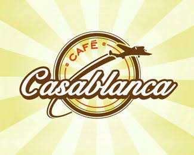
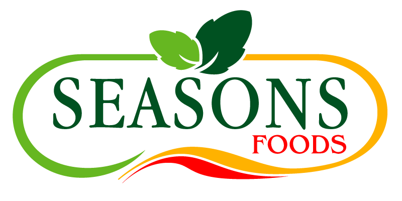

Our Projects



We cater for weddings, corporate events and schools. All our dishes are created using locally sourced fresh ingredients, we believe it is important to support the community we serve to thrive, so our success is their success! We hire local chefs who demonstrate a unique quality to cook amazing food, we call them our culinary heroes because it's them who prepare dishes with highest degree of skills which keeps our customers coming back for more.
Casablanca Café opened in August 2003 with the idea to provide a stylish café that focuses quite simply on excellent coffee, authentic Asian sweets, great food and hospitable service. Since opening our speciality of Asian sweets and famous sandwiches in East London has been regarded by local people, public and other industry as one of leading cafés of its kind in the U.K, setting an example and benchmark for all other Cafés to follow.
For over 10 years we've provided top notch food to Londoners and to Home Counties, be it a sumptuous three course meal for three hundred, a glittering canapé reception for five hundred or an important working lunch for twenty. We mix modern and traditional styles to cook up menus for every occassion. Most importantly, we keep it simple: our food is locally sourced, freshly prepared and always delicious.